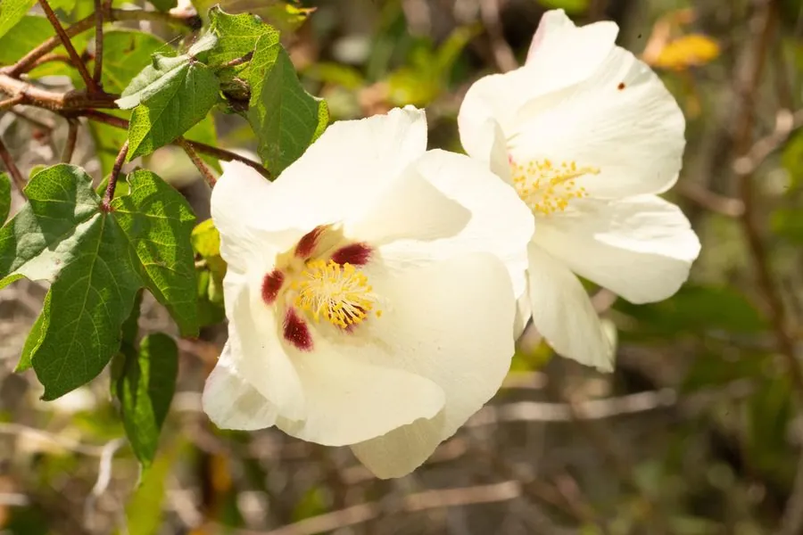

农作物与经济植物 · 植物界
棉花 Gossypium hirsutum

棉花的种子表面着生白色纤维，柔软坚韧，是纺织工业最主要的天然原料，棉籽可榨油，是重要的经济作物。
- 分类
- 门被子植物门纲双子叶植物纲目锦葵目科锦葵科属棉属
- 栖息环境
- 温暖干燥、光照充足的平原与灌区，生长期需水但怕涝
- 地理分布
- 原产美洲热带，现主产于中国、印度、美国、巴西等地
- 保护级别
- 暂无评估（栽培作物）
物种志
棉花（陆地棉）是锦葵科一年生亚灌木状草本，株高 1–1.5 m，茎直立，有茸毛或光滑。叶片宽卵形，掌状 3–5 裂，边缘有锯齿。花大而美，初开为乳白色，后渐变为淡黄或粉红，花瓣五片，基部有红色斑点。果实为蒴果，称为棉铃，成熟后裂开，露出四团白色棉絮，每个棉铃内有 8–10 粒种子，种子上着生纤维。
棉花原产美洲热带与亚热带地区，人工栽培历史超过 5000 年，19 世纪随纺织工业兴起成为全球性商品，美国南部、印度、中国、巴西等地都是主产区。棉花喜温暖、光照充足，生长期需水量较大但不耐涝，适宜在土层深厚的壤土中栽培。棉纤维可纺纱织布，棉籽可榨油、作饲料，棉籽壳可种菇；棉籽中含棉酚，需脱毒后利用。中国的新疆棉区以优质长绒棉闻名。
形态与习性
- 株高1–1.5 m
- 花初开乳白，后变淡黄或粉红
- 果实蒴果，称为棉铃
- 纤维着生于种子表面
- 主要用途纺织、棉籽油与饲料
- 原产地美洲热带地区
- 生长期需水量较大，但不耐涝
趣味知识
- 棉花的花刚开时是乳白色，第二天会变成淡黄色或粉红色。
- 棉铃裂开后露出棉絮，一个棉铃内有 8–10 粒带纤维的种子。
- 棉籽含棉酚，榨油后必须脱毒才能用作饲料。